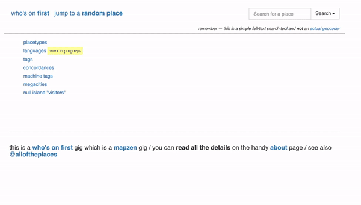

Bundling up descendants into GeoJSON This is a blog post by burritojustice, stepps00 and dphiffer that was published on Feb 10, 2017 and tagged whosonfirst and data
Every record in Who’s On First, our gazetteer of places around the world, has two powerful properties – geometry and hierarchy. Since the raw data of any WOF record is a blob of GeoJSON, you can take the URL and draw it in any modern mapping application with minimal effort. We thought it would be nice to let you grab GeoJSON for a bunch of records at once, so we added a tool called the Bundler for you using the soon-to-be-released Who’s On First API.
##Descending into Mapness
Say you want to highlight WOF ID 85682085 on a map. This is the permanent ID of Manitoba, home of The Weakerthans and a province with a cool step function for its border with Saskatchewan.
You can add the URL for the raw data – https://whosonfirst.mapzen.com/data/856/820/85/85682085.geojson – as a source in Tangram Play and have a map in seconds:
But what if you wanted to download all the regions of a country? You could grab the URL for Saskatchewan and then Alberta and then British Columbia and then the Yukon… or you could leverage the hierarchy that’s included in every Who’s On First record.
In the record for Manitoba, there’s a list of relations, both upward (Canada, North America) and downward (localities, postal codes, venues…) And if you look at Canada’s record, you see all the descendants that are regions, including Manitoba.
Since these relationships are all available via the Who’s On First API, we decided to implement a tool we’re calling the Bundler, based off an experiment called the Descender. It lets you collect all the geometries of specified levels of the descendants of a parent and bundles them into one handy blob of GeoJSON for you to download and use as you see fit.

##Life Before Bundles
(Stephen here.)
Prior to creation of the Bundler and the Descender (discussed below), our workflow to gather feature collections was much more complicated, requiring fairly laborious and tedious steps:
- Clone the whosonfirst-data repository (tens of GB of data)
- Clone the py-mapzen-whosonfirst-utils repository
- Gather a list of
wof:idvalues in a single CSV file - Run the following command, invoking the
csv-to-feature-collectionscript in the py-mapzen-whosonfirst-utils repository:python wof-csv-to-feature-collection -p /usr/local/mapzen/whosonfirst-data/data -c ~/Desktop/list_of_wofids.csv -o ~/Desktop/featurecollection.geojson full -i
Even after cloning the repo, the method of locally gathering a feature collection took a long time - a typical bundle of a few dozen descendants would take 2 to 3 minutes to get ready, and then another 3 minutes to generate, so we needed 5 to 6 minutes per bundle. This process was more time consuming than it needed to be and made us, well, sad; hence the birth of the Descender.
##The Descender
(John here.)
After talking to Aaron and Stephen about getting descendants out of WOF, I decided to build a proof of concept using the WOF API and wired together the Descender in Javascript. In order to gather and group a set of descendants from a parent, it…
- searches for a Who’s On First ID
- lets you select an arbitrary level of descent, whether they are directly related (regions of a country, counties of a region) or skipping levels of hierarchy (counties of a country, regions of a continent)
- calls up the list of the parents descendants for that level, and records their WOF IDs
- constructs URLs for the GeoJSON files for each descendant
- downloads a descendant, draws it on a map, and adds that GeoJSON into an array
- converts that array into a GeoJSON feature collection and stores it as a blob
- uses FileSaver.js to save the blob to the desktop, complete with a descriptive name.
While the search is clunky and it only gathers the first 500 descendants, it is fast, and actual GeoJSON appears on your desktop! We started using it right away in QGIS and Tangram.
That 5 to 6 minute process that we mentioned? It’s no exaggeration to say it can take just 5 to 6 seconds in the Descender. This made Stephen (and others) happy.
##Bringing the Descender into the Spelunker as the Bundler
(Dan here.)
When I saw John’s Descender tool, I knew this should be integrated into the Who’s On First Spelunker, which is how most of us explore and discover records for places. Along with Stephen, we began by copying the code wholesale, without regard for the existing site templates. Then I started to dig into the JavaScript (all of the data bundling happens in-browser on the front-end).
The process of refactoring the Descender involved reorganizing & tidying the code, breaking it into smaller self-contained functions, isolating variable namespaces, and separating the visible UI parts, which are inherently specific to a single web page, from the “business logic” that controls the querying, downloading and bundling mechanisms. This separation of concerns means that we have a general purpose WOF downloading tool that can be bolted onto a variety of other kinds of pages. It means you could potentially add a WOF bundler into your own specific mapping page.
On a very high level the code asks a REST API endpoint for a list of WOF IDs of a placetype that share a common ancestor record, then it just downloads them all into memory. When all the downloads finish the code assembles the accumulated blob of data into the flexible GeoJSON file format, and saves it to disk thanks to Eli Grey’s FileSaver.js library.
Once we got the Descender working as-is, we started wiring in links from various pages in the Spelunker (for example, in the “Other Links” section of a record).

##What can you do with the Bundler?
From the perspective of a user of data, the benefits of the Bundler are substantial; if a user would like to contribute to updating neighbourhood features in Who’s On First (outlined in a previous blogpost) or gather collections of new county features (outlined in another previous blogpost), a few simple clicks from the Spelunker are all it takes to get started!
We also let you gather descendants for different placetypes at the same time – for example, you can get the counties and postal codes of North Dakota all bundled up in one handy blob of GeoJSON.

A few examples of what you can collect through the Bundler:
The regions of South America
The regions of Ireland
9,000 venues in the Upper West Side of New York City

(click map to load 9000 points, and zoom in@)
You can also use it to update neighbourhood records for your locality, as we discuss in our guide here.
Because the GeoJSON contains the entire record, you can pull out and display on the map any data values you see in WOF, including alternative language place names and population as we did with the regions of India.
Things you should know, and things we should know
Take the Bundler for a spin! A few notes and caveats:
You may notice slightly offset geometries across placetypes; if this occurs, please file an issue so we can actively track these updates.
Beware that downloading very large bundles can be a memory-intensive process and can make your web browser… sad. We’ve successfully tested it on some fairly big descents, including the counties of the United States, which is 3100+ records and over 180MB of GeoJSON. (We also learned the hard way that we needed to turn off the preview map for bundles over 100MB or your browser would get… sad. We try do this for you automatically for big bundles, but you can toggle it yourself if things start to get slow.)
There’s a limit of 10,000 descendants in a bundle for the time being – we’re working on increasing that, and we’re also looking into building a command line tool, so stay tuned! If one of your bundles fails, let us know.
In October 2016 we retired Borders, a tool for downloading administrative boundary data from OpenStreetMap. You can readily access equivalent hierarchies and boundaries in Who’s On First by searching for a country and following its download descendants link. Here’s a list of concordances between Borders and WOF.
Another thing that might be useful are placetype bundles if you want to do a bulk download of WOF data by placetype.
The Who’s On First API is a thing but it’s not quite ready for general-public release (but will be soon).
But most importantly, let us know how you use the Bundler!